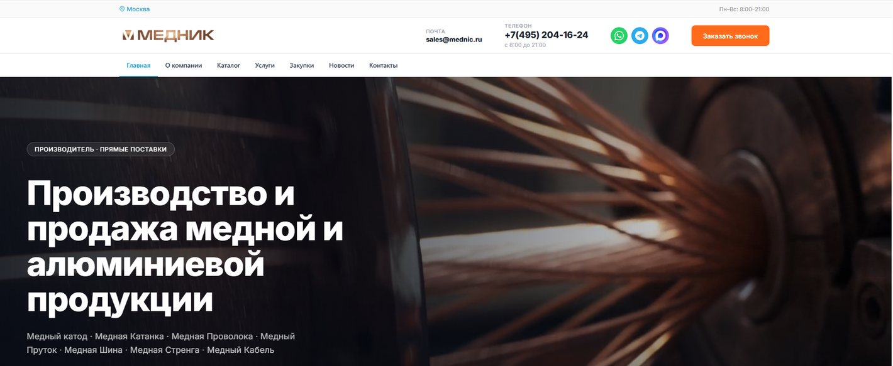

ИИ-ассистент по каталогу и запросам прайса для производителя медной продукции
Клиент описывает, что ему нужно, а ассистент уточняет параметры, подбирает категорию из каталога и передаёт менеджеру готовую карточку заявки.
Задача
На сайте производителя медной и алюминиевой продукции десять категорий каталога, а запросы приходят по телефону, почте, в мессенджеры и через формы. Покупателю нужно понять, что подходит под его задачу, а менеджеру не хватает исходных данных: марки, диаметра, объёма, города доставки. Часть времени уходит на уточнения, прежде чем можно назвать цену.
Что делаем
Встраиваем на сайт ИИ-ассистента: он ведёт диалог, уточняет параметры, подсказывает подходящую категорию по каталогу и стандартам и собирает карточку запроса. Цены, условия и отгрузку по-прежнему согласует менеджер.
Платформа сегодня

Как это работает
Запрос клиента
Покупатель пишет на сайте или в мессенджере, что ему нужно: изделие, объём, срок.
Уточнение параметров
Ассистент спрашивает недостающее: марку, диаметр, длину, объём, город доставки.
Подбор по каталогу
Ассистент предлагает подходящую категорию и объясняет отличия, опираясь на материалы сайта.
Карточка менеджеру
Параметры собираются в карточку и передаются ответственному сотруднику.
Расчёт и предложение
Цену, условия и сроки сообщает менеджер, ассистент напоминает ему об открытых запросах.
Что делает ИИ
- Уточняет параметры запроса в диалоге
- Подсказывает категорию каталога по описанию задачи
- Отвечает на типовые вопросы о каталоге и стандартах
- Собирает карточку заявки и передаёт менеджеру
- Напоминает о запросах, на которые ещё нет ответа
Что решает человек
- Названная цена и коммерческие условия
- Согласование объёма, сроков и отгрузки
- Любые гарантии и обязательства перед клиентом
- Нестандартные и срочные запросы
- Итоговое решение по заказу
ИИ собирает и структурирует запрос, а цену и условия называет человек. Каждая карточка хранит историю диалога.
Пример разбора
Иллюстрация сценария на условных примерах, а не данные реальных пользователей. Статус показывает, что делает система.
| Запрос клиента | Категория | Статус |
|---|---|---|
| Катанка, 8 мм, 20 т, доставка в Нижний Новгород | Катанка | Заявка готова |
| Проволока, диаметр не указан | Проволока | Нужно уточнить диаметр |
| Цена на конкретную дату по биржевой котировке | Условия | Передать менеджеру |
Что будем измерять
Проект ещё не запущен. Перед стартом мы договариваемся о показателях и сравниваем результат с тем, как было до внедрения. Цифры опубликуем после замера.
- Время первого ответа на запрос
- Доля заявок, пришедших с заполненными параметрами
- Время от запроса до первого предложения менеджера
- Число уточняющих вопросов менеджера на одну заявку
- Доля запросов вне рабочего времени, получивших ответ
Готовность процесса
Так мы оцениваем, подходит ли процесс для ИИ. Баллы здесь не выставляем: проект ещё не запущен.
Решения в этом проекте
ИИ-ассистент для заявок
Принимает обращения и передаёт готовую карточку менеджеру.
Подробнее →Ассистент по базе знаний
Отвечает по каталогу, стандартам и регламентам с указанием источника.
Подробнее →Чат-боты для сайта и мессенджеров
Один бот отвечает клиентам на сайте и в мессенджерах.
Подробнее →Похожая задача на вашем сайте?
Разберём её на бесплатной получасовой встрече и честно скажем, подойдёт ли здесь ИИ.


Готовы внедрить ИИ и получить результат?
Оставьте заявку, и мы свяжемся с вами в рабочее время, чтобы договориться о разборе вашей задачи.
- Бесплатная встреча на 30 минут
- Онлайн или в офисе в Москве
- Оценка эффекта и сроков пилота
- Подбор сценариев под вашу задачу
- Как процесс работает сейчас и кто в нём участвует
- Что занимает больше всего времени или создаёт ошибки
- Какие системы задействованы: CRM, 1С, мессенджеры, таблицы